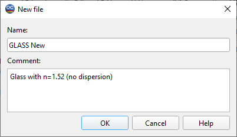

Creating New Database File
- This command is initiated when you use the Copy, Rename, or
create a New database file options from the Database Access Dialog.
- It allows you to specify a name for the new database file. You
can choose any name, including those with spaces and other characters. An optional comment may also be added. For any existing or newly created file, both the name and the comment can be modified using the Rename command.
